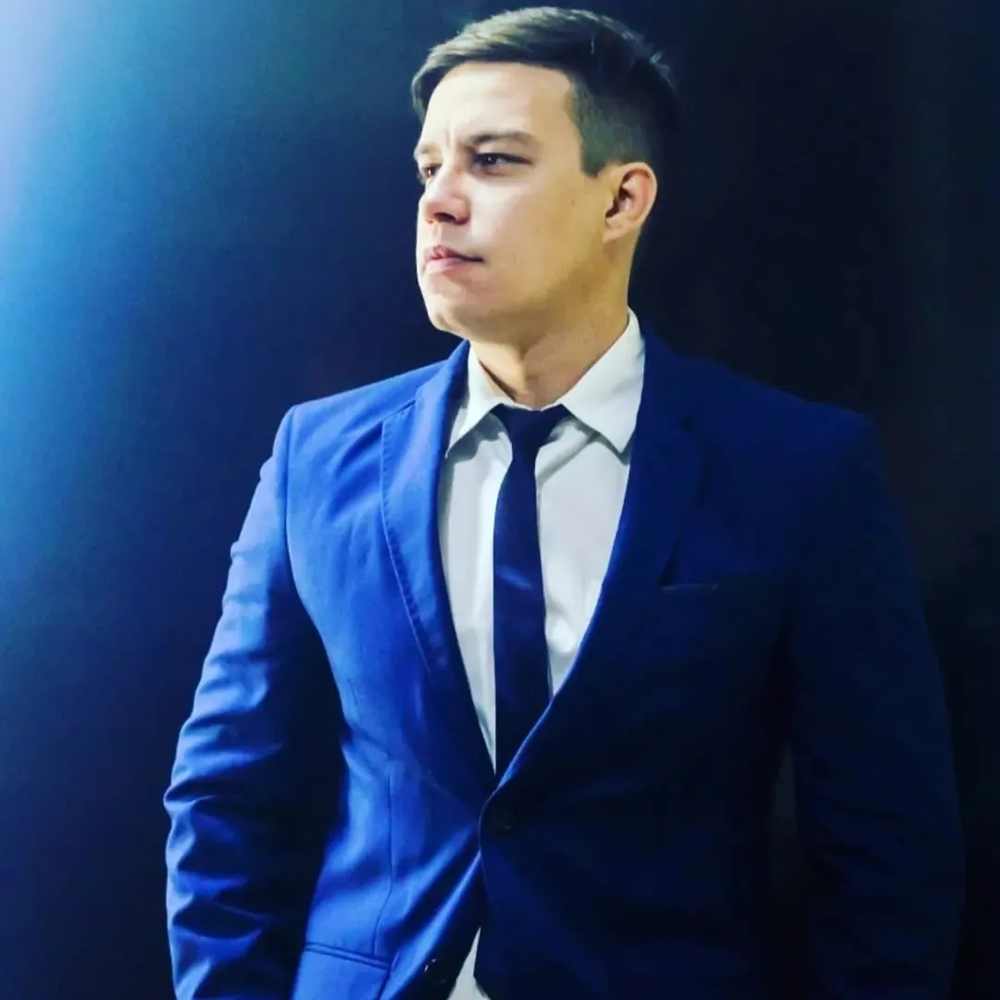
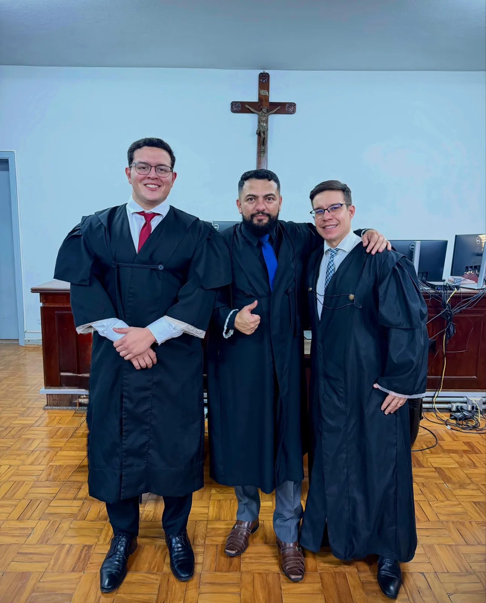
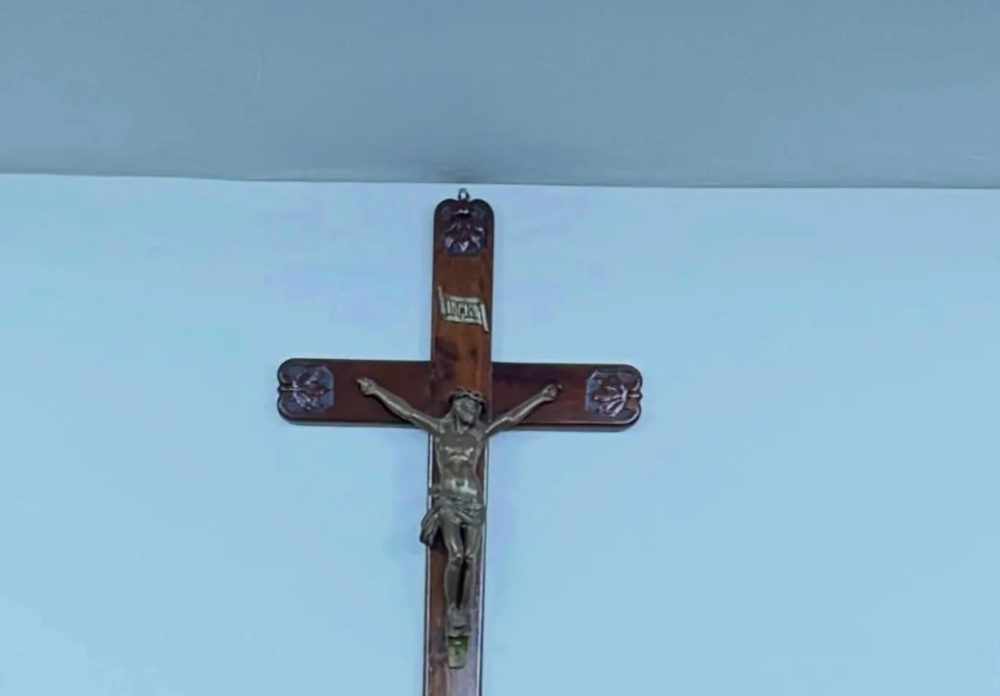
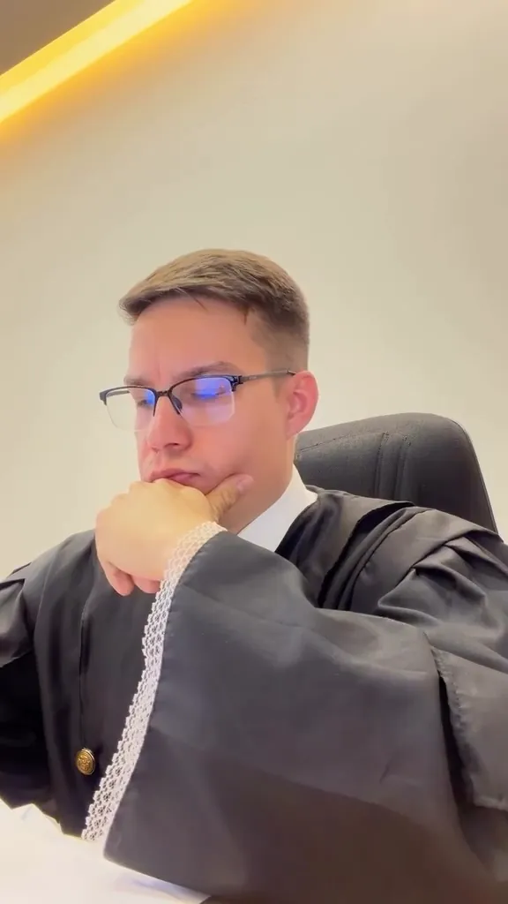

Tribunal do Júri
Os crimes dolosos contra a vida são julgados por jurados, cidadãos sorteados, no plenário do júri. A defesa acompanha o processo desde o inquérito e a primeira fase até os debates em plenário.
Conversar sobre este assuntoA defesa não para.
Alisson Sousa Cruz · Advogado · [OAB/SP nº a confirmar]

Prisão em flagrante? Plantão 24 horas.Atendimento a qualquer hora para prisão em flagrante.
Atuação na área criminal, da investigação aos tribunais, em Presidente Prudente, no Oeste Paulista e nos tribunais de segunda instância e superiores.
Os crimes dolosos contra a vida são julgados por jurados, cidadãos sorteados, no plenário do júri. A defesa acompanha o processo desde o inquérito e a primeira fase até os debates em plenário.
Conversar sobre este assuntoPrisão em flagrante, audiência de custódia e prisão preventiva. O habeas corpus é o instrumento previsto na Constituição contra a prisão ou a ameaça de prisão ilegal.
Conversar sobre este assuntoProcessos da Lei 11.343/2006: a distinção entre porte para uso e tráfico, a legalidade da abordagem e da busca e a análise das provas reunidas.
Conversar sobre este assuntoApelações e recursos, com sustentação oral no TJSP, no TRF3, no TJSC e no STJ. A revisão criminal permite rever uma condenação definitiva nas hipóteses da lei.
Conversar sobre este assuntoProcessos da Lei Maria da Penha e medidas protetivas, e casos em que a prova vem de celulares, mensagens e redes sociais: como foi obtida, preservada e apresentada.
Conversar sobre este assuntoUm roteiro simples para as primeiras horas.
Informação geral, não substitui a orientação de um advogado. Cada caso precisa ser analisado.
Anote a delegacia e a cidade, o horário da prisão e, se souber, o motivo informado pelos policiais.
A Constituição assegura à pessoa presa o direito de permanecer calada e de ter a assistência de um advogado. Ela não é obrigada a responder perguntas sem orientação.
Em regra, a pessoa presa deve ser levada a um juiz em até 24 horas. Na audiência de custódia, o juiz analisa se a prisão foi legal e se ela deve continuar.
Documento de identidade e CPF da pessoa, comprovante de endereço, comprovante de trabalho ou de estudo e, se houver, receitas e laudos médicos.
O plantão para prisão em flagrante atende 24 horas, pelo telefone ou pelo WhatsApp.
Entre em contato pelo telefone ou pelo WhatsApp.
Trechos de sustentações orais e registros do plenário. Os vídeos só carregam quando você aperta o play.
É a fala do advogado na sessão de julgamento de um recurso ou de um habeas corpus, antes do voto dos julgadores. Nos tribunais, o tempo costuma ser de 15 minutos, e hoje muitas sessões acontecem por videoconferência.


Uma semana real de agenda, do plenário do júri às sessões dos tribunais. [confirmar os dias com o Dr. Alisson]
Segunda
Sessão de julgamento no Tribunal Regional Federal da 3ª Região.
Terça
Sessão de julgamento no Tribunal de Justiça de São Paulo.
Quarta
Dia inteiro em plenário: depoimentos, interrogatório e debates.
Quinta
Audiência de instrução no fórum.
Sexta
Mais uma audiência, e a semana segue no escritório.

Alisson Sousa Cruz é advogado criminalista em Presidente Prudente, à frente da ASC Advocacia Criminal.
Atua no Tribunal do Júri e em processos criminais desde a investigação, com sustentação oral no TJSP, no TRF3, no TJSC e no STJ. Atende Presidente Prudente e as cidades do Oeste Paulista. [trajetória: revisar com ele]
Respostas gerais. Cada situação depende dos fatos e das provas do caso.
É uma ação prevista na Constituição para proteger a liberdade de ir e vir. Pode ser usada quando alguém está preso, ou ameaçado de prisão, de forma ilegal ou com abuso de poder. O pedido pode ser feito em qualquer instância, do juiz de primeiro grau ao STJ e ao STF.
A pessoa presa é apresentada a um juiz, em regra em até 24 horas. O juiz verifica se a prisão foi legal e se houve maus-tratos e decide se ela responde em liberdade, com ou sem medidas cautelares, ou se a prisão continua. Nessa audiência não se discute se a pessoa é culpada.
O júri julga os crimes dolosos contra a vida, como o homicídio e a sua tentativa. O processo tem duas fases: na primeira, o juiz decide se o caso vai a julgamento popular; na segunda, sete jurados sorteados entre cidadãos ouvem a acusação e a defesa no plenário e votam em sigilo.
A Constituição protege a casa. A entrada sem mandado judicial só é admitida nas hipóteses previstas em lei, como flagrante delito, desastre, para prestar socorro ou com o consentimento válido do morador, e os tribunais exigem razões concretas para ela. Cada caso precisa ser analisado.
É a ação que permite rever uma condenação já definitiva, da qual não cabe mais recurso, nas hipóteses do Código de Processo Penal: por exemplo, quando surgem provas novas ou quando a condenação contraria a lei ou as provas do processo.
Conteúdo informativo sobre direito penal e a rotina da advocacia criminal.
Rua João Ceribelli Pacca, 81, Jd. EverestPresidente Prudente/SP · CEP 19066-140 [confirmar se é o escritório]
[confirmar]
Fora do horário do escritório, o plantão atende casos de prisão em flagrante, todos os dias.
Nos tribunais: TJSP, TRF3, TJSC e STJ.